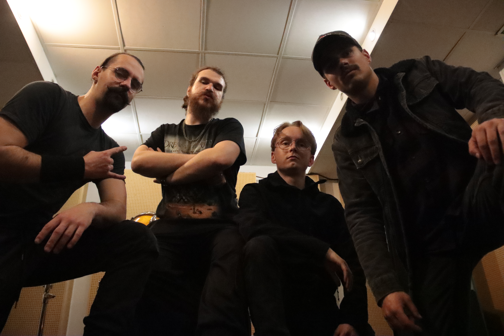

03 / LE GROUPE
Ça part d’Amiens.
HEAVYHARDCOREDEPUIS 2023
Quatre visages.
Une même énergie.
Né à Amiens en 2023, HANOMALIA croise le heavy et le hardcore. En français comme en anglais, une musique frontale, portée par la rage et l’envie de vous faire bouger.
Des riffs, du mouvement, du partage. Et la scène comme point de rencontre.
Billy Guitare, chantAlex ChantBastien Guitare, chantMax Basse, chant
Découvrir les membres ↗
HANOMALIA / AMIENS, FRANCE